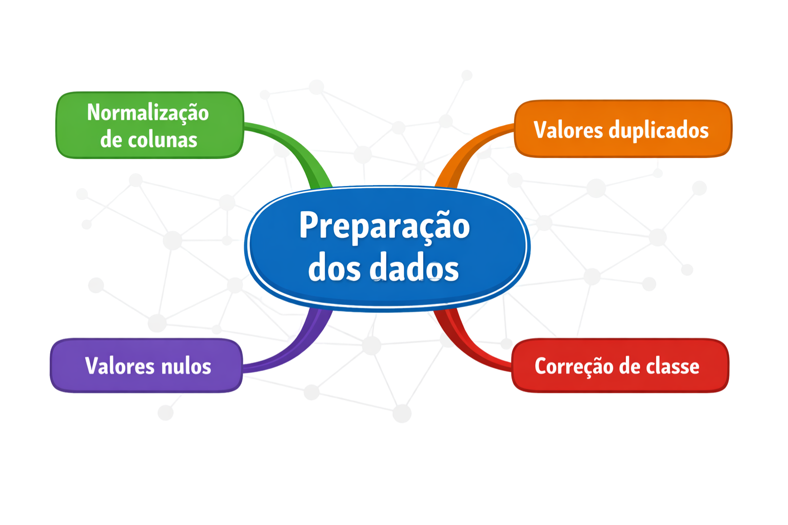

# executar pacotes úteis
library(readxl)
library(rio)
# importar .xlsx com 'read_excel'
demografico <- read_excel('data/demografico.xlsx') # função do pacote 'readxl'
# importar .csv com 'read.csv' e 'read.csv2'
laboratorio <- read.csv('data/laboratorio.csv') # função base do R
saude_percebida <- read.csv2('data/saude_percebida.csv') # função base do R
# importar .txt com 'read.table'
medidas_fisicas <- read.table('data/medidas_fisicas.txt', header = TRUE, sep = ';') # função base do R
# importar qualquer formato com 'import'
habitos <- import('data/habitos.xlsx') # função do pacote 'rio'Importação e preparação dos dados
Você recebe um banco de dados com inconsistências, ausência de padronização e possíveis erros, uma situação comum em contextos reais. Nesta etapa, realiza-se o tratamento e a organização dos dados, garantindo sua qualidade e adequação para análise.
📤 Importação e inspeção de banco de dados
Os principais formatos dos banco de dados que serão importados no R são: .txt, .csv, .xlsx.
As cinco bases de dados importadas anteriormente serão utilizadas ao longo das explicações e exercícios do curso. O objetivo é simular um fluxo de análise próximo ao de um projeto real, utilizando dados fictícios para fins didáticos.
Para a apresentação das funções deste tópico, será utilizado apenas o banco de dados demografico.
Dados demográficos
Contém informações pessoais e socioeconômicas dos 1.609 participantes do estudo. É a tabela central do curso — todas as outras se conectam a ela pelo
id.
A função str() mostra a estrutura do banco, número de linhas, colunas, nome e tipo de cada variável, e os primeiros valores. Já summary() retorna um resumo estatístico de cada coluna.
str(demografico)tibble [1,609 × 8] (S3: tbl_df/tbl/data.frame)
$ id : num [1:1609] 1 2 3 4 5 6 7 8 9 10 ...
$ nome : chr [1:1609] "Luiz Pereira" "Nair Nunes" "Raimunda Ferreira" "Irene Freitas" ...
$ sexo : chr [1:1609] "M" "F" "F" "F" ...
$ data_nascimento : chr [1:1609] "18/01/1931" "17/01/1935" "19/01/1925" "19/01/1925" ...
$ estado_civil : chr [1:1609] "Casado" "Casado" "Viuvo" "Casado" ...
$ n_residentes_domicilio: num [1:1609] 2 2 2 2 2 2 2 2 1 3 ...
$ renda_reais : num [1:1609] 341 0 314 953 877 ...
$ escolaridade_anos : num [1:1609] 0 0 3 2 0 3 2 4 1 0 ...summary(demografico) id nome sexo data_nascimento
Min. : 1.0 Length :1609 Length :1609 Length :1609
1st Qu.: 402.0 N.unique : 70 N.unique : 4 N.unique : 31
Median : 804.0 N.blank : 0 N.blank : 0 N.blank : 0
Mean : 803.7 Min.nchar: 10 Min.nchar: 1 Min.nchar: 10
3rd Qu.:1205.0 Max.nchar: 18 Max.nchar: 1 Max.nchar: 10
Max. :1606.0
estado_civil n_residentes_domicilio renda_reais escolaridade_anos
Length :1609 Min. :1.000 Min. : 0.0 Min. : 0.000
N.unique : 12 1st Qu.:2.000 1st Qu.:171.5 1st Qu.: 0.000
N.blank : 0 Median :2.000 Median :272.1 Median : 2.000
Min.nchar: 5 Mean :2.185 Mean :317.8 Mean : 2.527
Max.nchar: 8 3rd Qu.:3.000 3rd Qu.:395.1 3rd Qu.: 4.000
NAs : 15 Max. :5.000 Max. :959.6 Max. :16.000 🧹 Preparação dos dados

Selecionar colunas e filtrar linhas de uma tabela
Antes de preparar os dados, é importante entender como selecionar e filtrar elementos de uma tabela. Primeiro, será apresentado um exemplo usando uma matriz, que pode ser vista como uma combinação de vários vetores. Em seguida, será feito o mesmo processo com um data frame, que tem estrutura semelhante, mas com mais flexibilidade.
Uma matriz é uma estrutura bidimensional (linhas × colunas) em que todos os elementos são do mesmo tipo. Já um data frame também é bidimensional, mas permite que cada coluna tenha tipos diferentes.
A seleção de elementos em vetores já foi vista anteriormente por meio de índices. Essa mesma lógica se mantém para matrizes e data frames, com a diferença de que agora há duas dimensões: [linha, coluna].
matriz <- matrix(c(1, 2, 3, 4, 5, 6, 7, 8, 9), nrow = 3, byrow = TRUE)
matriz
#> [,1] [,2] [,3]
#> [1,] 1 2 3
#> [2,] 4 5 6
#> [3,] 7 8 9
# selecionar o elemento da linha 2, coluna 3
matriz[2, 3]
#> [1] 6Para data frames, a mesma notação se aplica, e é possível usar nomes de colunas no lugar de índices numéricos.
# selecionar o participante da linha 10
demografico[10, ]
# listar o nome de todas as colunas
colnames(demografico)
#> [1] "id" "nome"
#> [3] "sexo" "data_nascimento"
#> [5] "estado_civil" "n_residentes_domicilio"
#> [7] "renda_reais" "escolaridade_anos"
# selecionar apenas a coluna 'nome' (três formas equivalentes)
demografico[, 2]
demografico[, "nome"]
demografico$nome # mais usado
# filtrar participantes com renda abaixo de R$ 120
demografico[demografico$renda_reais < 120, ]
# selecionar o nome dos participantes com estado civil "Casado"
demografico[demografico$estado_civil == "CASADO", "nome"]Valores únicos e tratamento de duplicados
Antes de qualquer análise, é importante conhecer os valores que cada variável assume. A função unique() lista os valores distintos de uma coluna e muitas vezes já revela problemas.
unique(demografico$sexo)
#> [1] "F" "M" "f" "m"
unique(demografico$estado_civil)
#> [1] "Casado" "Viuvo" "Solteiro" "Separado" "casado"
#> [6] "viuvo" "CASADO" "VIUVO" "separado" "SOLTEIRO"
#> [11] "solteiro" "SEPARADO"Repare que sexo tem quatro variações para o que deveria ser apenas dois valores, e estado_civil tem doze. Vamos tratar isso em breve.
Linhas duplicadas são registros inteiramente repetidos. O mesmo participante com todos os valores idênticos. Elas inflam as contagens e distorcem qualquer análise.
# quantas linhas estão duplicadas?
sum(duplicated(demografico))
#> [1] 3# quais são as linhas duplicadas?
demografico[duplicated(demografico), ]# A tibble: 3 × 8
id nome sexo data_nascimento estado_civil n_residentes_domicilio
<dbl> <chr> <chr> <chr> <chr> <dbl>
1 225 Carmem Rocha F 17/01/1933 Casado 2
2 1012 Pedro Ferreira M 17/01/1935 Solteiro 3
3 1566 Maurício Agui… M 18/01/1932 Casado 2
# ℹ 2 more variables: renda_reais <dbl>, escolaridade_anos <dbl># remover as duplicatas, mantendo apenas a primeira ocorrência
demografico <- demografico[!duplicated(demografico), ]Ajuste de textos e colunas
Renomear e normalizar colunas
A função colnames() retorna os nomes das colunas do banco. Para padronizá-los, usamos toupper() (maiúsculas), tolower() (minúsculas) e gsub() (substituição de padrões).
# imprimir nome das colunas
colnames(demografico)
#> [1] "id" "nome"
#> [3] "sexo" "data_nascimento"
#> [5] "estado_civil" "n_residentes_domicilio"
#> [7] "renda_reais" "escolaridade_anos"
# deixar o nome das colunas com letras maiúsculas
colnames(demografico) <- toupper(colnames(demografico))
colnames(demografico)
#> [1] "ID" "NOME"
#> [3] "SEXO" "DATA_NASCIMENTO"
#> [5] "ESTADO_CIVIL" "N_RESIDENTES_DOMICILIO"
#> [7] "RENDA_REAIS" "ESCOLARIDADE_ANOS"
# voltar para letras minúsculas
colnames(demografico) <- tolower(colnames(demografico))
colnames(demografico)
#> [1] "id" "nome"
#> [3] "sexo" "data_nascimento"
#> [5] "estado_civil" "n_residentes_domicilio"
#> [7] "renda_reais" "escolaridade_anos"Normalizar variáveis textuais
Vimos que sexo e estado_civil têm múltiplas variações de capitalização para a mesma categoria. A solução mais direta é converter tudo para maiúsculas com toupper().
# normalizando a variável 'sexo'
demografico$sexo <- toupper(demografico$sexo)
unique(demografico$sexo)
#> [1] "F" "M"
# normalizando a variável 'estado_civil'
demografico$estado_civil <- toupper(demografico$estado_civil)
unique(demografico$estado_civil)
#> [1] "CASADO" "VIUVO" "SOLTEIRO" "SEPARADO" NAOutros tratamentos de texto
As funções substr() e paste() são úteis para recortar e combinar textos.
xy <- "xis ípsilon"
# recortar da primeira até a terceira letra
x <- substr(xy, 1, 3)
x
#> [1] "xis"
# juntar "xis" com "zê"
xz <- paste(x, "zê")
xz
#> [1] "xis zê"Tratamento de valores nulos
Valores nulos (NA) representam informações ausentes. Antes de removê-los, é importante entender quantos são e onde estão.
# contagem de NAs por coluna
colSums(is.na(demografico))
#> id nome sexo
#> 0 0 0
#> data_nascimento estado_civil n_residentes_domicilio
#> 0 15 0
#> renda_reais escolaridade_anos
#> 0 0# remover linhas com NA em 'estado_civil'
demografico <- demografico[!is.na(demografico$estado_civil), ]
Nota
Neste caso, os 15 valores nulos representam menos de 1% dos registros, então a remoção é uma abordagem segura. Quando a proporção de NAs é maior — acima de 20%, por exemplo — removê-los pode introduzir viés, e técnicas de imputação (substituição por média, mediana ou modelos estatísticos) devem ser consideradas.
Correção da classe das variáveis
Números
Às vezes, uma variável que deveria conter números acaba sendo tratada como texto (character) após a importação — especialmente se houver algum caractere inesperado na coluna.
No exemplo abaixo, a variável escolaridade_anos é convertida para texto propositalmente, apenas para demonstrar como identificar e corrigir esse problema.
demografico$escolaridade_anos <- as.character(demografico$escolaridade_anos)
class(demografico$escolaridade_anos)
#> [1] "character"Correção com as.numeric():
demografico$escolaridade_anos <- as.numeric(demografico$escolaridade_anos)
class(demografico$escolaridade_anos)
#> [1] "numeric"Datas
Datas também costumam ser importadas como texto. A função as.Date() faz a conversão, desde que você informe o formato correto com o argumento format.
class(demografico$data_nascimento)
#> [1] "character"
demografico$data_nascimento <- as.Date(demografico$data_nascimento, format = "%d/%m/%Y")
class(demografico$data_nascimento)
#> [1] "Date"
Dica
Os códigos de formato seguem a convenção do R: %d = dia, %m = mês numérico, %Y = ano com quatro dígitos. Para a data "18/01/1931", o formato correto é "%d/%m/%Y".
Categorias
Variáveis categóricas como sexo e estado_civil devem ser convertidas para fator (factor). Isso indica ao R que elas representam categorias, não texto livre, o que melhora a exibição de tabelas e gráficos.
class(demografico$sexo)
#> [1] "character"
# converter 'sexo' para fator
demografico$sexo <- as.factor(demografico$sexo)
class(demografico$sexo)
#> [1] "factor"class(demografico$estado_civil)
#> [1] "character"
# converter 'estado_civil' para fator
demografico$estado_civil <- as.factor(demografico$estado_civil)
class(demografico$estado_civil)
#> [1] "factor"str(demografico)tibble [1,591 × 8] (S3: tbl_df/tbl/data.frame)
$ id : num [1:1591] 1 2 3 4 5 6 7 8 9 10 ...
$ nome : chr [1:1591] "Luiz Pereira" "Nair Nunes" "Raimunda Ferreira" "Irene Freitas" ...
$ sexo : chr [1:1591] "M" "F" "F" "F" ...
$ data_nascimento : chr [1:1591] "18/01/1931" "17/01/1935" "19/01/1925" "19/01/1925" ...
$ estado_civil : chr [1:1591] "Casado" "Casado" "Viuvo" "Casado" ...
$ n_residentes_domicilio: num [1:1591] 2 2 2 2 2 2 2 2 1 3 ...
$ renda_reais : num [1:1591] 341 0 314 953 877 ...
$ escolaridade_anos : num [1:1591] 0 0 3 2 0 3 2 4 1 0 ...